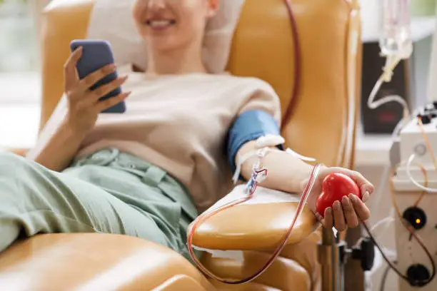
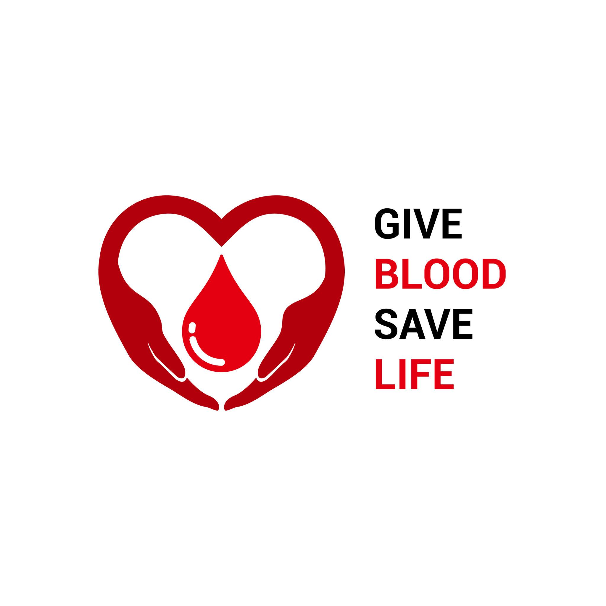
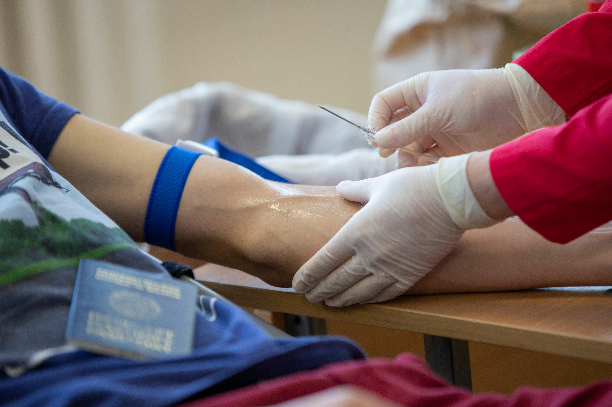
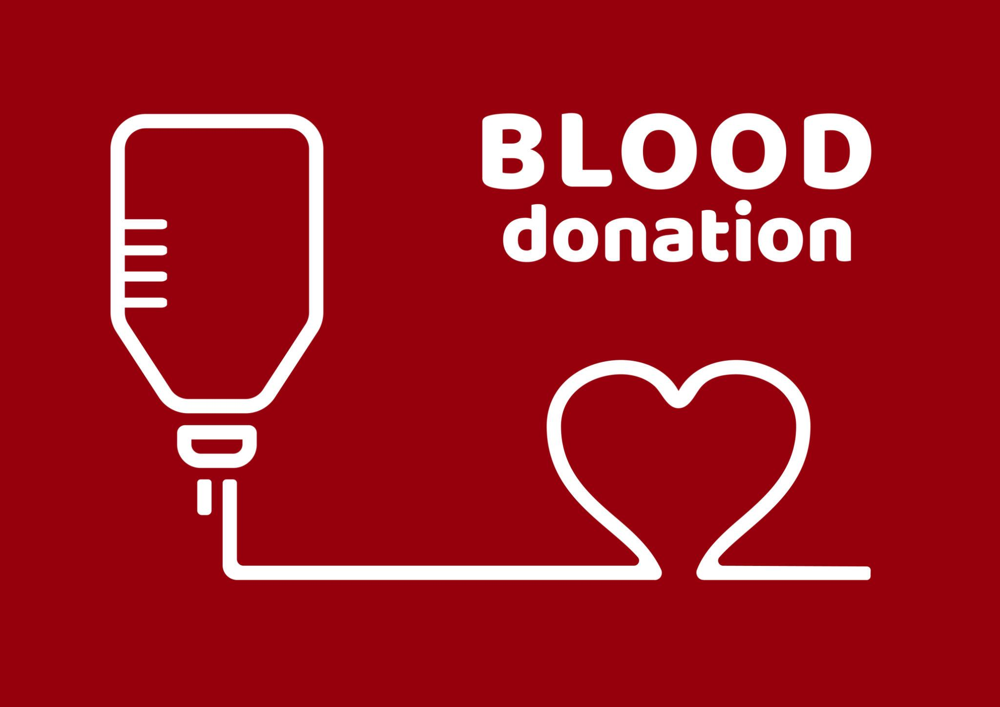
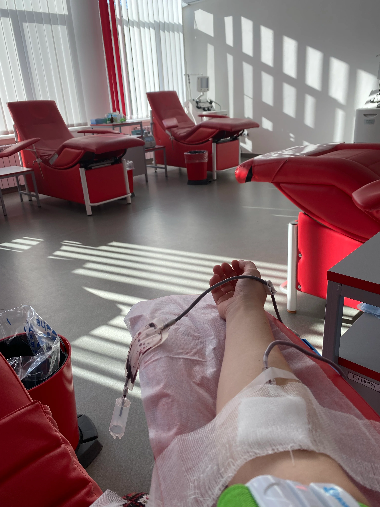

Find Blood Donors Instantly in Emergency
BloodConnect helps patients find nearby blood donors, blood banks, and emergency help quickly during critical situations. One click can save a family member.

0
Active Donors
0
SOS Requests Fulfilled
0
Lives Impacted

Why BloodConnect?
Many patients lose valuable time searching for the right blood group. BloodConnect makes this process faster by connecting patients directly with available donors in their city, helping bridge the gap when minutes count.
Join as DonorOur Features
Simple, fast and completely helpful in critical emergency situations.

Donor Registration
Quickly sign up, list your availability toggle, and update your information anytime to save lives.

Blood Group Finder
Search donors by blood group and city instantly to find perfect matches in real-time.

WhatsApp SOS Alert
Send emergency blood requests directly on WhatsApp using automatically pre-filled SOS messages.

Nearby Blood Banks
Find nearby government blood banks, hospitals, and coordinates using free interactive maps.
Your One Donation Can Save a Life
Become a vital part of BloodConnect and help someone in need in your local community today.
Register Now